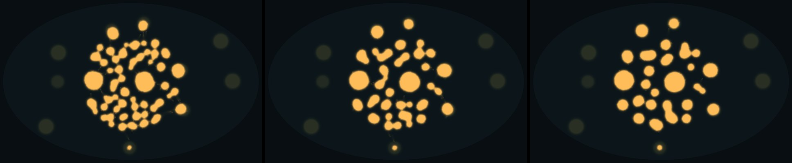
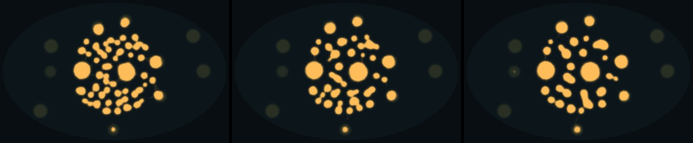
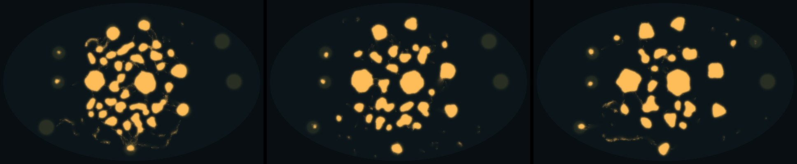
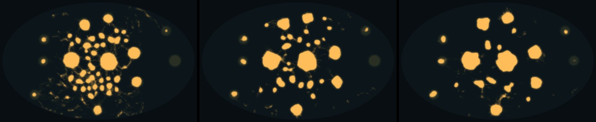
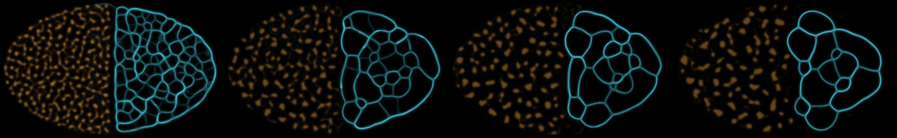
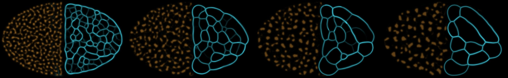
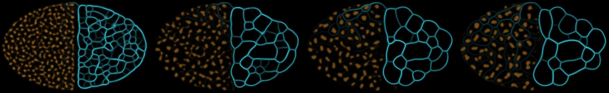

Big dish · 1024 × 640 · 16 paired seeds · 11 Nov 2026
Who finds food first, and two species on one map
Two tests for the mould ladder. First, which droplet moulds reach food that is away from where they start, out of 12 food piles. The piles the start disc already touches don't count, which leaves 2 to 7 a seed. Second, whether a droplet species and a network species, each with its own settings, can share one map.
Grazing is what makes droplets forage. Grazers reached 49 of 77 far piles by 30 s, against 9 for still droplets, and more on 15 of 16 seeds. Scouts on top of grazers reach more again: 62 of 77, more on 10 seeds, fewer on none. These moulds are slow: the edge of a grazer's body moves about 10 cells a minute on a map 256 cells wide. Small droplets and scouts are what travel.
1 · Who reaches food first
Grazers send small droplets to far food
30,000 droplet walkers start in a disc at the centre. A pile counts as reached once its trail passes the tube cut. Scored: far piles reached by 30 s, each arm against its base, sign test with Holm over 5 comparisons. I picked this measure after a flawed first run had already shown the direction. Seeds 9 to 16 were new, and they go the same way (grazers ahead on 8 of 8).
Mould
Far piles by 30 s
By 60 s
Against its base (30 s)
Holm p
Still droplets
9 / 77
10
base
Grazers
49 / 77
56
more on 15 seeds, fewer on 0
0.0003
Grazers + 20% scouts
62 / 77
72
over grazers: more on 10, fewer on 0
0.0078
Droplets + 20% fast
19 / 77
23
more on 7, fewer on 0
0.047
Scouts only
3 / 77
4
more on 1, fewer on 6
0.25
Droplets + 20% scouts
5 / 77
6
more on 0, fewer on 3
0.25

10 s30 s60 s
Still droplets
seed 1, far piles
0 of 4 by 30 s, 0 by 60 s
outer edge (r90)
190 → 197 fine cells in 60 s
A still field of bodies. The bright discs are piles under the start; the dim ones were never reached.

10 s30 s60 s
Droplets + 20% fast walkers (step 2x, lay 0.3x)
seed 1, far piles
0 of 4 by 30 s, 0 by 60 s
16 seeds
19 of 77 by 30 s
Looks like still droplets; the gain shows on other seeds.

10 s30 s60 s
Grazers
seed 1, far piles
2 of 4 by 30 s, 3 by 60 s
median first reach
7.7 s (16 seeds)
Small droplets break off and walk to the far piles. The farthest reached was 113 cells out, near the wall.

10 s30 s60 s
Grazers + 20% scouts (reach 3x, lay 0.3x)
seed 1, far piles
3 of 4 by 30 s, 4 by 60 s
16 seeds
62 of 77 by 30 s, 72 by 60 s
The scouts haze out first, the droplets follow, and by 60 s the mould has gathered onto the food.2 · Two species, each with its own settings
A droplet species and a network species share the map
New: each species can now have its own sensor angle and reach, turn, step, deposit, fade, crowding, grazing and exploring. Left half: the Drifter, 29,870 grazing droplets. Right half: a Sprawler, 1 million walkers of the Jenson network. Each avoids the other's trail. Measured: each species' own area together, over its area alone on the same seed.
DrifterSprawler
They coexist on 8 of 8 seeds: each species' area together is within half to twice its area alone, at 30 s and at 60 s. The Drifter is untouched (0.99 to 1.02). The Sprawler varies from 0.65 to 1.90: on 3 seeds its tubes cross into the droplets' half. Beside the network the droplets end in fewer bodies (fewer on 8 of 8 seeds at 60 s). With avoidance as the only rule between them there is no fight yet.

1 s5 s10 s20 s
Seed 1
Drifter, together / alone
1.02 at 30 s, 1.01 at 60 s
Sprawler, together / alone
0.75 at 30 s, 0.99 at 60 s
Drifter bodies at 60 s
40 / 44 (together / alone)
The network contracts from the border into its own half. The droplets merge slowly into fewer bodies.

1 s5 s10 s20 s
Seed 2
Drifter, together / alone
1.01 at 30 s, 1.02 at 60 s
Sprawler, together / alone
0.87 at 30 s, 0.80 at 60 s
Drifter bodies at 60 s
47 / 49 (together / alone)
The same split. The network's mesh coarsens into a few big cells by 20 s.

1 s5 s10 s20 s
Seed 3
Drifter, together / alone
1.01 at 30 s, 1.01 at 60 s
Sprawler, together / alone
1.89 at 30 s, 1.87 at 60 s
Drifter bodies at 60 s
43 / 48 (together / alone)
Here the network sends tubes into the droplets' half, and its area ends 1.9 times its area alone. The droplets don't react.3 · For the ladder
A slow forager, and a step up from it
Drifter (grazers): a still body that sends small droplets to food it smells. Its body barely moves, so the player can see where it will go next.
Drifter with scouts: a faint haze runs ahead, then the droplets follow. It found 94% of far food in a minute. A candidate next rung.
Scouts alone don't forage, and scouts on still droplets pull them into chains that reach less. The gain needs bodies that crawl and scouts that lead.
Not yet tested: crystals that run dry, growth from food (W0), and a fight between two species with different rules.